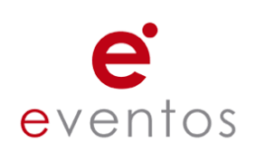

CATEGORÍA: SEMINARIOS Y CONFERENCIAS
RELACIÓN DE EVENTOS
La relación de eventos próximos es la siguiente:
VENTAS Y FELICIDAD: Incrementa tus Ventas
- Organizador del evento
- Congreso Internacional de Ventas
- Descripción:
- ¿Te gustaría conocer aquellas herramientas prácticas que te ayudarán a incrementar tus ingresos y ser una persona más feliz? En esta conferencia Jorge Martínez, coach en ventas y experto en felicidad te enseñará herramientas que podrás aplicar de forma inmediata para incrementar tus ventas, tus ingresos y tu felicidad.
- Lugar:
- VideoStreaming
- Fecha y Hora:
- Sábado 11 de abril, 10:30 am
- Costo de la entrada:
- 15 soles

MARCA PERSONAL EN REDES SOCIALES
- Organizador del evento
- Congreso Internacional de Ventas
- Descripción:
- Branding personal en el entorno digital: en la actualidad todas las personas y empresas debemos posicionarnos adecuadamente en el entorno digital (Redes sociales, motores de búsqueda, etc.), para ello existen estrategias y herramientas que ya funcionan y han contribuido a que muchas personas – empresas generen mayor confianza a sus prospectos, obtengan más clientes y mejores resultados.
- Lugar:
- VideoStreaming
- Fecha y Hora:
- Sábado 11 de abril, 7:54 pm
- Costo de la entrada:
- 25 soles
NEUROCOACHING Y NEUROLIDERAZGO EN VENTAS
- Organizador del evento
- Congreso Internacional de Ventas
- Descripción:
- EX GERENTE REGIONAL PARA GREAT PLACE TO WORK® INSTITUTE, Mauricio Bock ha recorrido más de 20 países en búsqueda de las mejores practices en Liderazgo.
- Lugar:
- VideoStreaming
- Fecha y Hora:
- Sábado 18 de agosto, 7:43 pm
- Costo de la entrada:
- 35 soles
ALTERNATIVAS DE NEGOCIO EN TIEMPOS DE COVID-19
- Organizador del evento
- Martín Cáceda
- Descripción:
- El taller trata desde ideas de que tipos de negocios hacer desde casa con nada o una minima de inversion, como promocionarlo en las redes sociales, la mejor manera de publicitarlo y como diseñar tus flyers de tu negocio y es dictado por martin cáceda, destacado diseñador grafico -, community manager - comunicador y empresario dedicado a la publicidad grafica en redes sociales e impresa.
- Lugar:
- VideoStreaming
- Fecha y Hora:
- Sábado 25 de abril, 6:00 pm
- Costo de la entrada:
- 15 soles
REGRESAR A PÁGINA PRINCIPAL